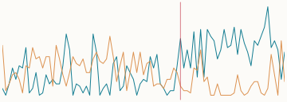
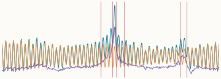
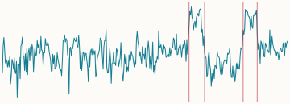
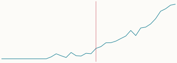
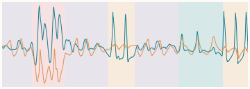
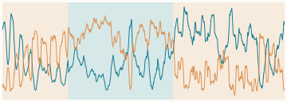
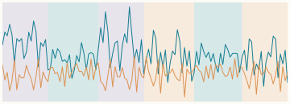
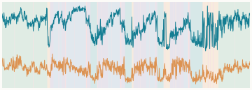

Narrative voice in Jekyll and Hyde Pronoun rates change where the novel turns to first-person testimony. Change points
Storm surge at The Battery, New York Removing the tide reveals Hurricane Sandy and a second storm a week later. Change points
GC content along a chloroplast genome Two GC-rich regions contain almost all the ribosomal RNA genes. Change points
New expressions in climate research When “climate justice”, “loss and damage”, “just transition” and “climate emergency” took hold. Change points
Human activities in motion capture Walking, jumping, punching and kicking, recognised each time they recur. States
Generation mix in Great Britain A windier mix returns after a gas-heavy interval in January 2024. States
Returning speakers Three voices taking turns, recognised each time they come back. States
Sleep stages from one night of recordings Unsupervised states compared with an expert hypnogram. States